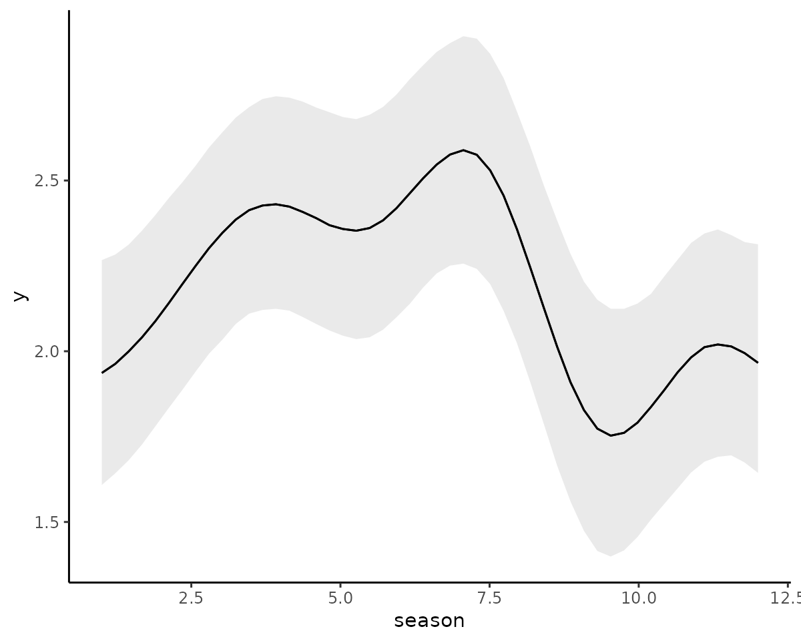
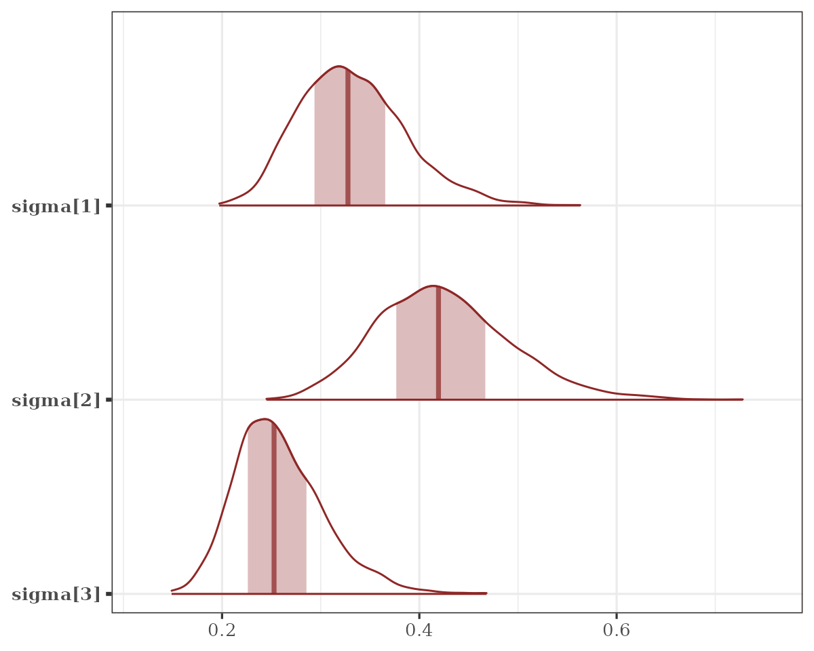
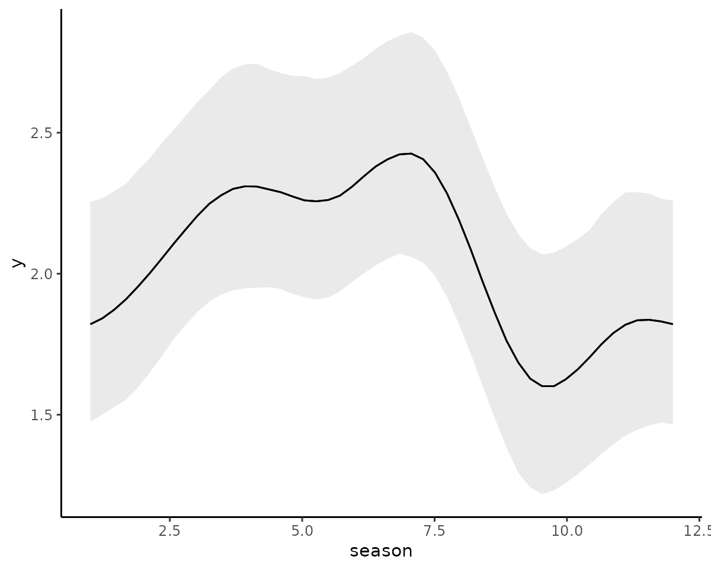
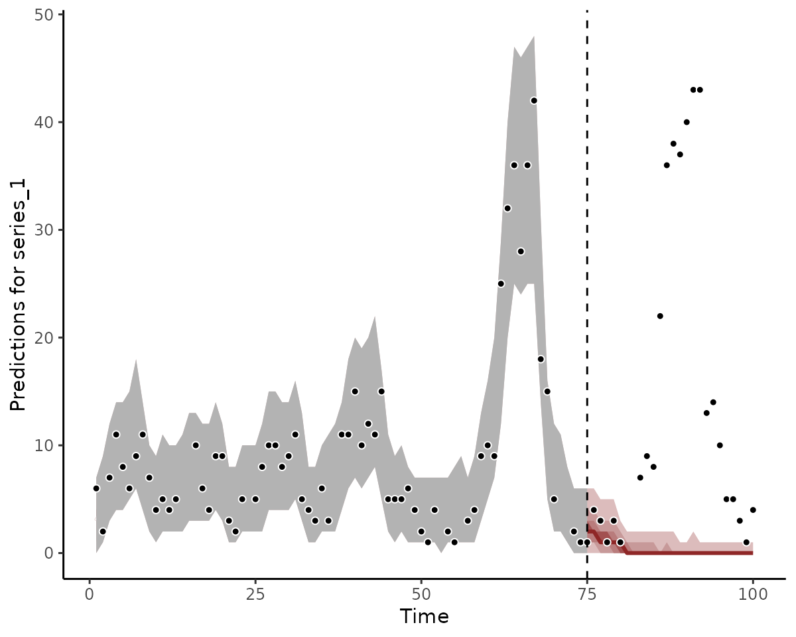
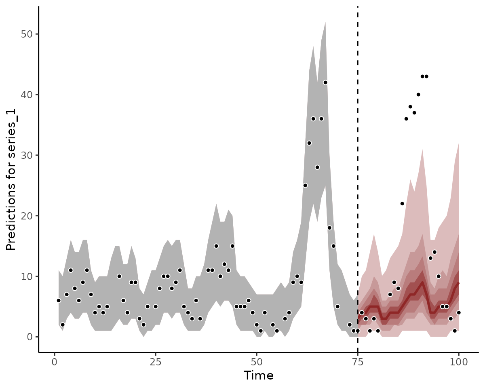
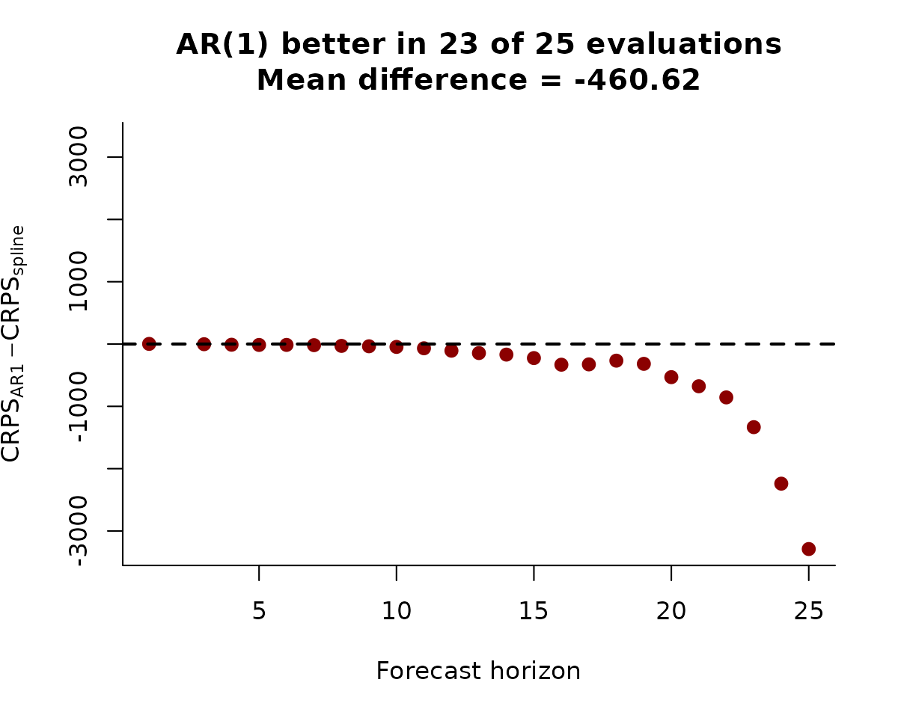
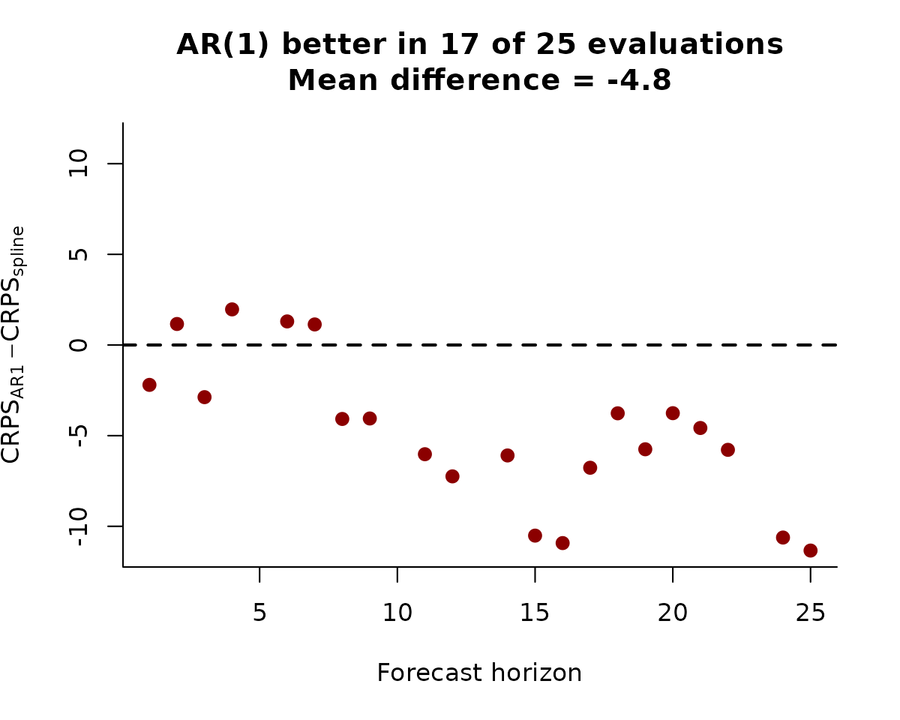

Forecasting and forecast evaluation in mvgam
Nicholas J Clark
2025-03-10
Source:vignettes/forecast_evaluation.Rmd
forecast_evaluation.RmdThe purpose of this vignette is to show how the mvgam
package can be used to produce probabilistic forecasts and to evaluate
those forecasts using a variety of proper scoring rules.
Simulating discrete time series
We begin by simulating some data to show how forecasts are computed
and evaluated in mvgam. The sim_mvgam()
function can be used to simulate series that come from a variety of
response distributions as well as seasonal patterns and/or dynamic
temporal patterns. Here we simulate a collection of three time
count-valued series. These series all share the same seasonal pattern
but have different temporal dynamics. By setting
trend_model = GP() and prop_trend = 0.75, we
are generating time series that have smooth underlying temporal trends
(evolving as Gaussian Processes with squared exponential kernel) and
moderate seasonal patterns. The observations are Poisson-distributed and
we allow 10% of observations to be missing.
set.seed(1)
simdat <- sim_mvgam(
T = 100,
n_series = 3,
mu = 2,
trend_model = GP(),
prop_trend = 0.75,
family = poisson(),
prop_missing = 0.10
)The returned object is a list containing training and
testing data (sim_mvgam() automatically splits the data
into these folds for us) together with some other information about the
data generating process that was used to simulate the data
str(simdat)
#> List of 6
#> $ data_train :'data.frame': 225 obs. of 5 variables:
#> ..$ y : int [1:225] 6 NA 11 2 5 20 7 8 NA 11 ...
#> ..$ season: int [1:225] 1 1 1 2 2 2 3 3 3 4 ...
#> ..$ year : int [1:225] 1 1 1 1 1 1 1 1 1 1 ...
#> ..$ series: Factor w/ 3 levels "series_1","series_2",..: 1 2 3 1 2 3 1 2 3 1 ...
#> ..$ time : int [1:225] 1 1 1 2 2 2 3 3 3 4 ...
#> $ data_test :'data.frame': 75 obs. of 5 variables:
#> ..$ y : int [1:75] 4 23 8 3 NA 3 1 20 8 3 ...
#> ..$ season: int [1:75] 4 4 4 5 5 5 6 6 6 7 ...
#> ..$ year : int [1:75] 7 7 7 7 7 7 7 7 7 7 ...
#> ..$ series: Factor w/ 3 levels "series_1","series_2",..: 1 2 3 1 2 3 1 2 3 1 ...
#> ..$ time : int [1:75] 76 76 76 77 77 77 78 78 78 79 ...
#> $ true_corrs : num [1:3, 1:3] 1 0.0861 0.1161 0.0861 1 ...
#> $ true_trends : num [1:100, 1:3] -0.851 -0.758 -0.664 -0.571 -0.48 ...
#> $ global_seasonality: num [1:100] -0.966 -0.197 0.771 1.083 0.37 ...
#> $ trend_params :List of 2
#> ..$ alpha: num [1:3] 0.883 0.936 1.036
#> ..$ rho : num [1:3] 7.54 4.01 7.49Each series in this case has a shared seasonal pattern. The resulting time series are similar to what we might encounter when dealing with count-valued data that can take small counts:
plot_mvgam_series(
data = simdat$data_train,
series = "all"
)For individual series, we can plot the training and testing data, as well as some more specific features of the observed data:
plot_mvgam_series(
data = simdat$data_train,
newdata = simdat$data_test,
series = 1
)Modelling dynamics with splines
The first model we will fit uses a shared cyclic spline to capture the repeated seasonality, as well as series-specific splines of time to capture the long-term dynamics. We allow the temporal splines to be fairly complex so they can capture as much of the temporal variation as possible:
mod1 <- mvgam(
y ~ s(season, bs = "cc", k = 8) +
s(time, by = series, bs = "cr", k = 20),
knots = list(season = c(0.5, 12.5)),
trend_model = "None",
data = simdat$data_train,
silent = 2
)The model fits without issue:
summary(mod1, include_betas = FALSE)
#> GAM formula:
#> y ~ s(season, bs = "cc", k = 8) + s(time, by = series, k = 20)
#>
#> Family:
#> poisson
#>
#> Link function:
#> log
#>
#> Trend model:
#> None
#>
#> N series:
#> 3
#>
#> N timepoints:
#> 100
#>
#> Status:
#> Fitted using Stan
#> 4 chains, each with iter = 1000; warmup = 500; thin = 1
#> Total post-warmup draws = 2000
#>
#>
#> GAM coefficient (beta) estimates:
#> 2.5% 50% 97.5% Rhat n_eff
#> (Intercept) 1.9 1.9 2 1 1675
#>
#> Approximate significance of GAM smooths:
#> edf Ref.df Chi.sq p-value
#> s(season) 3.80 6 19.9 < 2e-16 ***
#> s(time):seriesseries_1 8.22 19 39.1 0.47727
#> s(time):seriesseries_2 8.74 19 45.6 0.00092 ***
#> s(time):seriesseries_3 6.49 19 55.6 < 2e-16 ***
#> ---
#> Signif. codes: 0 '***' 0.001 '**' 0.01 '*' 0.05 '.' 0.1 ' ' 1
#>
#> Stan MCMC diagnostics:
#> n_eff / iter looks reasonable for all parameters
#> Rhats above 1.05 found for 29 parameters
#> *Diagnose further to investigate why the chains have not mixed
#> 0 of 2000 iterations ended with a divergence (0%)
#> 43 of 2000 iterations saturated the maximum tree depth of 10 (2.15%)
#> *Run with max_treedepth set to a larger value to avoid saturation
#> E-FMI indicated no pathological behavior
#>
#> Samples were drawn using NUTS(diag_e) at Mon Mar 10 09:53:00 2025.
#> For each parameter, n_eff is a crude measure of effective sample size,
#> and Rhat is the potential scale reduction factor on split MCMC chains
#> (at convergence, Rhat = 1)
#>
#> Use how_to_cite(mod1) to get started describing this modelAnd we can plot the conditional effects of the splines (on the link scale) to see that they are estimated to be highly nonlinear
conditional_effects(mod1, type = "link")
Modelling dynamics with a correlated AR1
Before showing how to produce and evaluate forecasts, we will fit a
second model to these data so the two models can be compared. This model
is equivalent to the above, except we now use a correlated AR(1) process
to model series-specific dynamics. See ?AR for more
details.
mod2 <- mvgam(y ~ 1,
trend_formula = ~ s(season, bs = "cc", k = 8) - 1,
trend_knots = list(season = c(0.5, 12.5)),
trend_model = AR(cor = TRUE),
noncentred = TRUE,
data = simdat$data_train,
silent = 1
)The summary for this model now contains information on the autoregressive and process error parameters for each time series:
summary(mod2, include_betas = FALSE)
#> GAM observation formula:
#> y ~ 1
#>
#> GAM process formula:
#> ~s(season, bs = "cc", k = 8) - 1
#>
#> Family:
#> poisson
#>
#> Link function:
#> log
#>
#> Trend model:
#> AR(cor = TRUE)
#>
#>
#> N process models:
#> 3
#>
#> N series:
#> 3
#>
#> N timepoints:
#> 75
#>
#> Status:
#> Fitted using Stan
#> 4 chains, each with iter = 1000; warmup = 500; thin = 1
#> Total post-warmup draws = 2000
#>
#>
#> GAM observation model coefficient (beta) estimates:
#> 2.5% 50% 97.5% Rhat n_eff
#> (Intercept) 1.7 2 2.4 1 925
#>
#> Process model AR parameter estimates:
#> 2.5% 50% 97.5% Rhat n_eff
#> ar1[1] 0.73 0.89 0.99 1.01 575
#> ar1[2] 0.65 0.82 0.95 1.00 662
#> ar1[3] 0.87 0.96 1.00 1.01 534
#>
#> Process error parameter estimates:
#> 2.5% 50% 97.5% Rhat n_eff
#> sigma[1] 0.24 0.33 0.45 1.01 511
#> sigma[2] 0.32 0.43 0.60 1.00 501
#> sigma[3] 0.19 0.26 0.37 1.00 424
#>
#> Approximate significance of GAM process smooths:
#> edf Ref.df Chi.sq p-value
#> s(season) 2.74 6 17.9 5.3e-06 ***
#> ---
#> Signif. codes: 0 '***' 0.001 '**' 0.01 '*' 0.05 '.' 0.1 ' ' 1
#>
#> Stan MCMC diagnostics:
#> n_eff / iter looks reasonable for all parameters
#> Rhat looks reasonable for all parameters
#> 11 of 2000 iterations ended with a divergence (0.55%)
#> *Try running with larger adapt_delta to remove the divergences
#> 0 of 2000 iterations saturated the maximum tree depth of 10 (0%)
#> E-FMI indicated no pathological behavior
#>
#> Samples were drawn using NUTS(diag_e) at Mon Mar 10 09:54:03 2025.
#> For each parameter, n_eff is a crude measure of effective sample size,
#> and Rhat is the potential scale reduction factor on split MCMC chains
#> (at convergence, Rhat = 1)
#>
#> Use how_to_cite(mod2) to get started describing this modelWe can plot the posteriors for these parameters, and for any other
parameter for that matter, using bayesplot routines. First
the autoregressive parameters:
mcmc_plot(mod2, variable = "ar", regex = TRUE, type = "areas")
And now the variance (\(\sigma\)) parameters:
mcmc_plot(mod2, variable = "sigma", regex = TRUE, type = "areas")
We can again plot the conditional seasonal effect:
conditional_effects(mod2, type = "link")
The estimates for the seasonal component are fairly similar for the two models, but below we will see if they produce similar forecasts
Forecasting with the forecast() function
Probabilistic forecasts can be computed in two main ways in
mvgam. The first is to take a model that was fit only to
training data (as we did above in the two example models) and produce
temporal predictions from the posterior predictive distribution by
feeding newdata to the forecast() function. It
is crucial that any newdata fed to the
forecast() function follows on sequentially from the data
that was used to fit the model (this is not internally checked by the
package because it might be a headache to do so when data are not
supplied in a specific time-order). When calling the
forecast() function, you have the option to generate
different kinds of predictions (i.e. predicting on the link scale,
response scale or to produce expectations; see
?forecast.mvgam for details). We will use the default and
produce forecasts on the response scale, which is the most common way to
evaluate forecast distributions
fc_mod1 <- forecast(mod1, newdata = simdat$data_test)
fc_mod2 <- forecast(mod2, newdata = simdat$data_test)The objects we have created are of class mvgam_forecast,
which contain information on hindcast distributions, forecast
distributions and true observations for each series in the data:
str(fc_mod1)
#> List of 16
#> $ call :Class 'formula' language y ~ s(season, bs = "cc", k = 8) + s(time, by = series, k = 20)
#> .. ..- attr(*, ".Environment")=<environment: R_GlobalEnv>
#> $ trend_call : NULL
#> $ family : chr "poisson"
#> $ family_pars : NULL
#> $ trend_model : chr "None"
#> $ drift : logi FALSE
#> $ use_lv : logi FALSE
#> $ fit_engine : chr "stan"
#> $ type : chr "response"
#> $ series_names : Factor w/ 3 levels "series_1","series_2",..: 1 2 3
#> $ train_observations:List of 3
#> ..$ series_1: int [1:75] 6 2 7 11 8 6 9 11 7 4 ...
#> ..$ series_2: int [1:75] NA 5 8 2 1 NA 2 4 0 2 ...
#> ..$ series_3: int [1:75] 11 20 NA 36 44 34 57 50 26 28 ...
#> $ train_times : int [1:75] 1 2 3 4 5 6 7 8 9 10 ...
#> $ test_observations :List of 3
#> ..$ series_1: int [1:25] 4 3 1 3 1 NA NA 7 9 8 ...
#> ..$ series_2: int [1:25] 23 NA 20 20 14 7 6 6 6 1 ...
#> ..$ series_3: int [1:25] 8 3 8 3 NA 1 1 9 8 NA ...
#> $ test_times : int [1:25] 76 77 78 79 80 81 82 83 84 85 ...
#> $ hindcasts :List of 3
#> ..$ series_1: num [1:2000, 1:75] 5 4 0 2 0 5 2 4 4 0 ...
#> .. ..- attr(*, "dimnames")=List of 2
#> .. .. ..$ : NULL
#> .. .. ..$ : chr [1:75] "ypred[1,1]" "ypred[2,1]" "ypred[3,1]" "ypred[4,1]" ...
#> ..$ series_2: num [1:2000, 1:75] 1 3 0 1 4 3 3 3 2 3 ...
#> .. ..- attr(*, "dimnames")=List of 2
#> .. .. ..$ : NULL
#> .. .. ..$ : chr [1:75] "ypred[1,2]" "ypred[2,2]" "ypred[3,2]" "ypred[4,2]" ...
#> ..$ series_3: num [1:2000, 1:75] 9 14 15 14 14 16 9 14 17 16 ...
#> .. ..- attr(*, "dimnames")=List of 2
#> .. .. ..$ : NULL
#> .. .. ..$ : chr [1:75] "ypred[1,3]" "ypred[2,3]" "ypred[3,3]" "ypred[4,3]" ...
#> $ forecasts :List of 3
#> ..$ series_1: num [1:2000, 1:25] 2 1 7 2 2 4 3 5 3 1 ...
#> .. ..- attr(*, "dimnames")=List of 2
#> .. .. ..$ : NULL
#> .. .. ..$ : chr [1:25] "ypred[76,1]" "ypred[77,1]" "ypred[78,1]" "ypred[79,1]" ...
#> ..$ series_2: num [1:2000, 1:25] 17 12 15 18 19 20 22 16 15 36 ...
#> .. ..- attr(*, "dimnames")=List of 2
#> .. .. ..$ : NULL
#> .. .. ..$ : chr [1:25] "ypred[76,2]" "ypred[77,2]" "ypred[78,2]" "ypred[79,2]" ...
#> ..$ series_3: num [1:2000, 1:25] 2 3 4 3 3 4 7 2 5 3 ...
#> .. ..- attr(*, "dimnames")=List of 2
#> .. .. ..$ : NULL
#> .. .. ..$ : chr [1:25] "ypred[76,3]" "ypred[77,3]" "ypred[78,3]" "ypred[79,3]" ...
#> - attr(*, "class")= chr "mvgam_forecast"We can plot the forecasts for some series from each model using the
S3 plot method for objects of this class:
plot(fc_mod1, series = 1)
plot(fc_mod2, series = 1)
plot(fc_mod1, series = 2)
plot(fc_mod2, series = 2)Clearly the two models do not produce equivalent forecasts. We will come back to scoring these forecasts in a moment.
Forecasting with newdata in mvgam()
The second way we can produce forecasts in mvgam is to
feed the testing data directly to the mvgam() function as
newdata. This will include the testing data as missing
observations so that they are automatically predicted from the posterior
predictive distribution using the generated quantities
block in Stan. As an example, we can refit
mod2 but include the testing data for automatic
forecasts:
mod2 <- mvgam(y ~ 1,
trend_formula = ~ s(season, bs = "cc", k = 8) - 1,
trend_knots = list(season = c(0.5, 12.5)),
trend_model = AR(cor = TRUE),
noncentred = TRUE,
data = simdat$data_train,
newdata = simdat$data_test,
silent = 2
)Because the model already contains a forecast distribution, we do not
need to feed newdata to the forecast()
function:
fc_mod2 <- forecast(mod2)The forecasts will be nearly identical to those calculated previously:
plot(fc_mod2, series = 1)Scoring forecast distributions
A primary purpose of the mvgam_forecast class is to
readily allow forecast evaluations for each series in the data, using a
variety of possible scoring functions. See
?mvgam::score.mvgam_forecast to view the types of scores
that are available. A useful scoring metric is the Continuous Rank Probability Score (CRPS). A CRPS
value is similar to what we might get if we calculated a weighted
absolute error using the full forecast distribution.
crps_mod1 <- score(fc_mod1, score = "crps")
str(crps_mod1)
#> List of 4
#> $ series_1 :'data.frame': 25 obs. of 5 variables:
#> ..$ score : num [1:25] 1.136 0.88 0.322 1.119 0.29 ...
#> ..$ in_interval : num [1:25] 1 1 1 1 1 NA NA 0 0 0 ...
#> ..$ interval_width: num [1:25] 0.9 0.9 0.9 0.9 0.9 0.9 0.9 0.9 0.9 0.9 ...
#> ..$ eval_horizon : int [1:25] 1 2 3 4 5 6 7 8 9 10 ...
#> ..$ score_type : chr [1:25] "crps" "crps" "crps" "crps" ...
#> $ series_2 :'data.frame': 25 obs. of 5 variables:
#> ..$ score : num [1:25] 2.01 NA 6.25 14.4 17.03 ...
#> ..$ in_interval : num [1:25] 1 NA 1 1 1 1 0 0 0 0 ...
#> ..$ interval_width: num [1:25] 0.9 0.9 0.9 0.9 0.9 0.9 0.9 0.9 0.9 0.9 ...
#> ..$ eval_horizon : int [1:25] 1 2 3 4 5 6 7 8 9 10 ...
#> ..$ score_type : chr [1:25] "crps" "crps" "crps" "crps" ...
#> $ series_3 :'data.frame': 25 obs. of 5 variables:
#> ..$ score : num [1:25] 3.617 0.466 4.168 0.491 NA ...
#> ..$ in_interval : num [1:25] 0 1 0 1 NA 1 1 0 0 NA ...
#> ..$ interval_width: num [1:25] 0.9 0.9 0.9 0.9 0.9 0.9 0.9 0.9 0.9 0.9 ...
#> ..$ eval_horizon : int [1:25] 1 2 3 4 5 6 7 8 9 10 ...
#> ..$ score_type : chr [1:25] "crps" "crps" "crps" "crps" ...
#> $ all_series:'data.frame': 25 obs. of 3 variables:
#> ..$ score : num [1:25] 6.76 NA 10.74 16.01 NA ...
#> ..$ eval_horizon: int [1:25] 1 2 3 4 5 6 7 8 9 10 ...
#> ..$ score_type : chr [1:25] "sum_crps" "sum_crps" "sum_crps" "sum_crps" ...
crps_mod1$series_1
#> score in_interval interval_width eval_horizon score_type
#> 1 1.1362237 1 0.9 1 crps
#> 2 0.8796700 1 0.9 2 crps
#> 3 0.3222703 1 0.9 3 crps
#> 4 1.1191818 1 0.9 4 crps
#> 5 0.2902030 1 0.9 5 crps
#> 6 NA NA 0.9 6 crps
#> 7 NA NA 0.9 7 crps
#> 8 6.2283237 0 0.9 8 crps
#> 9 8.3822845 0 0.9 9 crps
#> 10 7.4587490 0 0.9 10 crps
#> 11 21.4860392 0 0.9 11 crps
#> 12 35.3964518 0 0.9 12 crps
#> 13 37.4077225 0 0.9 13 crps
#> 14 36.5122305 0 0.9 14 crps
#> 15 39.5236040 0 0.9 15 crps
#> 16 42.4870670 0 0.9 16 crps
#> 17 42.6519410 0 0.9 17 crps
#> 18 12.8012838 0 0.9 18 crps
#> 19 13.8279528 0 0.9 19 crps
#> 20 9.8057457 0 0.9 20 crps
#> 21 4.8109472 0 0.9 21 crps
#> 22 4.8450168 0 0.9 22 crps
#> 23 2.8327210 0 0.9 23 crps
#> 24 0.8850368 1 0.9 24 crps
#> 25 3.8071090 0 0.9 25 crpsThe returned list contains a data.frame for each series
in the data that shows the CRPS score for each evaluation in the testing
data, along with some other useful information about the fit of the
forecast distribution. In particular, we are given a logical value (1s
and 0s) telling us whether the true value was within a pre-specified
credible interval (i.e. the coverage of the forecast distribution). The
default interval width is 0.9, so we would hope that the values in the
in_interval column take a 1 approximately 90% of the time.
This value can be changed if you wish to compute different coverages,
say using a 60% interval:
crps_mod1 <- score(fc_mod1, score = "crps", interval_width = 0.6)
crps_mod1$series_1
#> score in_interval interval_width eval_horizon score_type
#> 1 1.1362237 1 0.6 1 crps
#> 2 0.8796700 1 0.6 2 crps
#> 3 0.3222703 1 0.6 3 crps
#> 4 1.1191818 1 0.6 4 crps
#> 5 0.2902030 1 0.6 5 crps
#> 6 NA NA 0.6 6 crps
#> 7 NA NA 0.6 7 crps
#> 8 6.2283237 0 0.6 8 crps
#> 9 8.3822845 0 0.6 9 crps
#> 10 7.4587490 0 0.6 10 crps
#> 11 21.4860392 0 0.6 11 crps
#> 12 35.3964518 0 0.6 12 crps
#> 13 37.4077225 0 0.6 13 crps
#> 14 36.5122305 0 0.6 14 crps
#> 15 39.5236040 0 0.6 15 crps
#> 16 42.4870670 0 0.6 16 crps
#> 17 42.6519410 0 0.6 17 crps
#> 18 12.8012838 0 0.6 18 crps
#> 19 13.8279528 0 0.6 19 crps
#> 20 9.8057457 0 0.6 20 crps
#> 21 4.8109472 0 0.6 21 crps
#> 22 4.8450168 0 0.6 22 crps
#> 23 2.8327210 0 0.6 23 crps
#> 24 0.8850368 0 0.6 24 crps
#> 25 3.8071090 0 0.6 25 crpsWe can also compare forecasts against out of sample observations
using the Expected Log Predictive Density (ELPD; also known as the
log score). The ELPD is a strictly proper scoring rule that can be
applied to any distributional forecast, but to compute it we need
predictions on the link scale rather than on the outcome scale. This is
where it is advantageous to change the type of prediction we can get
using the forecast() function:
link_mod1 <- forecast(mod1, newdata = simdat$data_test, type = "link")
score(link_mod1, score = "elpd")$series_1
#> score eval_horizon score_type
#> 1 -2.232486 1 elpd
#> 2 -2.021430 2 elpd
#> 3 -1.249183 3 elpd
#> 4 -2.266812 4 elpd
#> 5 -1.252127 5 elpd
#> 6 NA 6 elpd
#> 7 NA 7 elpd
#> 8 -7.733385 8 elpd
#> 9 -9.085766 9 elpd
#> 10 -8.671512 10 elpd
#> 11 -21.237948 11 elpd
#> 12 -35.248924 12 elpd
#> 13 -34.666270 13 elpd
#> 14 -35.566371 14 elpd
#> 15 -38.164107 15 elpd
#> 16 -37.377479 16 elpd
#> 17 -46.300607 17 elpd
#> 18 -13.527263 18 elpd
#> 19 -14.289913 19 elpd
#> 20 -9.302897 20 elpd
#> 21 -7.084533 21 elpd
#> 22 -7.179676 22 elpd
#> 23 -5.787679 23 elpd
#> 24 -3.175058 24 elpd
#> 25 -6.243910 25 elpdFinally, when we have multiple time series it may also make sense to
use a multivariate proper scoring rule. mvgam offers two
such options: the Energy score and the Variogram score. The first
penalizes forecast distributions that are less well calibrated against
the truth, while the second penalizes forecasts that do not capture the
observed true correlation structure. Which score to use depends on your
goals, but both are very easy to compute:
energy_mod2 <- score(fc_mod2, score = "energy")
str(energy_mod2)
#> List of 4
#> $ series_1 :'data.frame': 25 obs. of 3 variables:
#> ..$ in_interval : num [1:25] 1 1 1 1 1 NA NA 1 1 1 ...
#> ..$ interval_width: num [1:25] 0.9 0.9 0.9 0.9 0.9 0.9 0.9 0.9 0.9 0.9 ...
#> ..$ eval_horizon : int [1:25] 1 2 3 4 5 6 7 8 9 10 ...
#> $ series_2 :'data.frame': 25 obs. of 3 variables:
#> ..$ in_interval : num [1:25] 1 NA 1 1 1 1 1 1 1 1 ...
#> ..$ interval_width: num [1:25] 0.9 0.9 0.9 0.9 0.9 0.9 0.9 0.9 0.9 0.9 ...
#> ..$ eval_horizon : int [1:25] 1 2 3 4 5 6 7 8 9 10 ...
#> $ series_3 :'data.frame': 25 obs. of 3 variables:
#> ..$ in_interval : num [1:25] 1 1 1 1 NA 1 1 1 1 NA ...
#> ..$ interval_width: num [1:25] 0.9 0.9 0.9 0.9 0.9 0.9 0.9 0.9 0.9 0.9 ...
#> ..$ eval_horizon : int [1:25] 1 2 3 4 5 6 7 8 9 10 ...
#> $ all_series:'data.frame': 25 obs. of 3 variables:
#> ..$ score : num [1:25] 4.68 NA 4.97 5.5 NA ...
#> ..$ eval_horizon: int [1:25] 1 2 3 4 5 6 7 8 9 10 ...
#> ..$ score_type : chr [1:25] "energy" "energy" "energy" "energy" ...The returned object still provides information on interval coverage
for each individual series, but there is only a single score per horizon
now (which is provided in the all_series slot):
energy_mod2$all_series
#> score eval_horizon score_type
#> 1 4.676734 1 energy
#> 2 NA 2 energy
#> 3 4.971224 3 energy
#> 4 5.495762 4 energy
#> 5 NA 5 energy
#> 6 NA 6 energy
#> 7 NA 7 energy
#> 8 4.021035 8 energy
#> 9 4.193438 9 energy
#> 10 NA 10 energy
#> 11 13.062641 11 energy
#> 12 22.344846 12 energy
#> 13 NA 13 energy
#> 14 20.732809 14 energy
#> 15 24.023995 15 energy
#> 16 25.017249 16 energy
#> 17 27.913722 17 energy
#> 18 6.225731 18 energy
#> 19 10.575444 19 energy
#> 20 4.096245 20 energy
#> 21 3.045512 21 energy
#> 22 3.573394 22 energy
#> 23 NA 23 energy
#> 24 9.180310 24 energy
#> 25 8.122963 25 energyYou can use your score(s) of choice to compare different models. For
example, we can compute and plot the difference in CRPS scores for each
series in data. Here, a negative value means the AR(1) model
(mod2) is better, while a positive value means the spline
model (mod1) is better.
crps_mod1 <- score(fc_mod1, score = "crps")
crps_mod2 <- score(fc_mod2, score = "crps")
diff_scores <- crps_mod2$series_1$score -
crps_mod1$series_1$score
plot(diff_scores,
pch = 16, cex = 1.25, col = "darkred",
ylim = c(
-1 * max(abs(diff_scores), na.rm = TRUE),
max(abs(diff_scores), na.rm = TRUE)
),
bty = "l",
xlab = "Forecast horizon",
ylab = expression(CRPS[AR1] ~ -~ CRPS[spline])
)
abline(h = 0, lty = "dashed", lwd = 2)
ar1_better <- length(which(diff_scores < 0))
title(main = paste0(
"AR(1) better in ",
ar1_better,
" of ",
length(diff_scores),
" evaluations",
"\nMean difference = ",
round(mean(diff_scores, na.rm = TRUE), 2)
))
diff_scores <- crps_mod2$series_2$score -
crps_mod1$series_2$score
plot(diff_scores,
pch = 16, cex = 1.25, col = "darkred",
ylim = c(
-1 * max(abs(diff_scores), na.rm = TRUE),
max(abs(diff_scores), na.rm = TRUE)
),
bty = "l",
xlab = "Forecast horizon",
ylab = expression(CRPS[AR1] ~ -~ CRPS[spline])
)
abline(h = 0, lty = "dashed", lwd = 2)
ar1_better <- length(which(diff_scores < 0))
title(main = paste0(
"AR(1) better in ",
ar1_better,
" of ",
length(diff_scores),
" evaluations",
"\nMean difference = ",
round(mean(diff_scores, na.rm = TRUE), 2)
))
diff_scores <- crps_mod2$series_3$score -
crps_mod1$series_3$score
plot(diff_scores,
pch = 16, cex = 1.25, col = "darkred",
ylim = c(
-1 * max(abs(diff_scores), na.rm = TRUE),
max(abs(diff_scores), na.rm = TRUE)
),
bty = "l",
xlab = "Forecast horizon",
ylab = expression(CRPS[AR1] ~ -~ CRPS[spline])
)
abline(h = 0, lty = "dashed", lwd = 2)
ar1_better <- length(which(diff_scores < 0))
title(main = paste0(
"AR(1) better in ",
ar1_better,
" of ",
length(diff_scores),
" evaluations",
"\nMean difference = ",
round(mean(diff_scores, na.rm = TRUE), 2)
))
The correlated AR(1) model consistently gives better forecasts, and the difference between scores tends to grow as the forecast horizon increases. This is not unexpected given the way that splines linearly extrapolate outside the range of training data
Further reading
The following papers and resources offer useful material about Bayesian forecasting and proper scoring rules:
Clark N.J., Ernest S.K.M., Senyondo H., Simonis J., White E.P., Yenni G.M., Karunarathna K.A.N.K. Beyond single-species models: leveraging multispecies forecasts to navigate the dynamics of ecological predictability. PeerJ 13:e18929 (2025) https://doi.org/10.7717/peerj.18929
Hyndman, Rob J., and George Athanasopoulos. Forecasting: principles and practice. OTexts, 2018.
Gneiting, Tilmann, and Adrian E. Raftery. Strictly proper scoring rules, prediction, and estimation Journal of the American statistical Association 102.477 (2007) 359-378.
Simonis, Juniper L., Ethan P. White, and SK Morgan Ernest. Evaluating probabilistic ecological forecasts Ecology 102.8 (2021) e03431.
Interested in contributing?
I’m actively seeking PhD students and other researchers to work in
the areas of ecological forecasting, multivariate model evaluation and
development of mvgam. Please see this small list of
opportunities on my website and do reach out if you are interested
(n.clark’at’uq.edu.au)